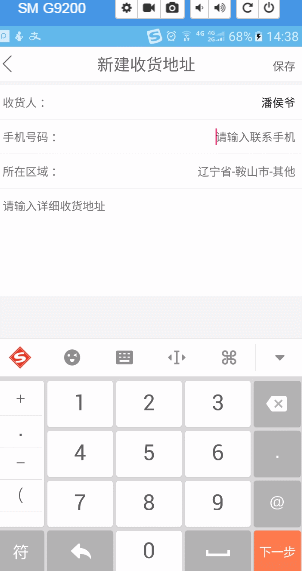

这篇文章主要介绍了Android中使用开源框架Citypickerview实现省市区三级联动选择效果,非常不错，具有参考借鉴价值，需要的朋友可以参考下
1．概述
记得之前做商城项目，需要在地址选择中实现省市区三级联动，方便用户快速的填写地址，当时使用的是一个叫做android-wheel 的开源控件，当时感觉非常好用，唯一麻烦的是需要自己整理并解析省市区的xml文件，思路很简单，但是代码量相对大了些。偶然期间发现了另外一个开源组件，也就是今天要介绍的citypickerview。
github地址:crazyandcoder/citypicker
2. 实现效果
下面给大家演示下实现效果：

3. 实现方法
（1）添加依赖
1 2 3 4 | dependencies { ... compile 'liji.library.dev:citypickerview:0.7.0'} |
（2）代码实现
这里就不在介绍布局文件了，直接演示实现代码：
1 2 3 4 5 6 7 8 9 10 11 12 13 14 15 16 17 18 19 20 21 22 23 24 25 26 27 28 29 30 31 32 33 34 35 36 37 38 39 40 41 42 43 44 45 46 47 48 49 50 51 52 53 54 55 56 57 58 59 60 61 62 63 64 65 66 67 68 69 70 71 72 73 74 75 76 77 78 79 80 81 | package com.mly.panhouye.anchong.activity;import android.content.Context;import android.content.Intent;import android.graphics.Color;import android.os.Bundle;import android.text.TextUtils;import android.view.View;import android.view.inputmethod.InputMethodManager;import android.widget.EditText;import android.widget.TextView;import com.lljjcoder.citypickerview.widget.CityPicker;import com.mly.panhouye.anchong.R;import com.mly.panhouye.anchong.entity.Anchong_Address;import com.mly.panhouye.anchong.view.TitleBarView;import static com.mly.panhouye.anchong.utils.Constant.NEWADDRESS;public class NewAddressActivity extends BaseActivity { TitleBarView address_manager_titleBar; EditText new_address_name,new_address_phone,new_address_address; Anchong_Address newAddress = new Anchong_Address(); TextView new_address_area; @Override protected void onCreate(Bundle savedInstanceState) { super.onCreate(savedInstanceState); setContentView(R.layout.activity_new_address); initView(); } //Texview的点击事件 public void chooseArea(View view) { //判断输入法的隐藏状态 InputMethodManager imm = (InputMethodManager) getSystemService(Context.INPUT_METHOD_SERVICE); if (imm.isActive()) { imm.hideSoftInputFromWindow(view.getWindowToken(), InputMethodManager.HIDE_NOT_ALWAYS); selectAddress();//调用CityPicker选取区域 } } private void selectAddress() { CityPicker cityPicker = new CityPicker.Builder(NewAddressActivity.this) .textSize(14) .title("地址选择") .titleBackgroundColor("#FFFFFF") .titleTextColor("#696969") .confirTextColor("#696969") .cancelTextColor("#696969") .province("江苏省") .city("常州市") .district("天宁区") .textColor(Color.parseColor("#000000")) .provinceCyclic(true) .cityCyclic(false) .districtCyclic(false) .visibleItemsCount(7) .itemPadding(10) .onlyShowProvinceAndCity(false) .build(); cityPicker.show(); //监听方法，获取选择结果 cityPicker.setOnCityItemClickListener(new CityPicker.OnCityItemClickListener() { @Override public void onSelected(String... citySelected) { //省份 String province = citySelected[0]; //城市 String city = citySelected[1]; //区县（如果设定了两级联动，那么该项返回空） String district = citySelected[2]; //邮编 String code = citySelected[3]; //为TextView赋值 new_address_area.setText(province.trim() + "-" + city.trim() + "-" + district.trim()); } }); } @Override protected void initView() { new_address_name = (EditText) findViewById(R.id.new_address_name); new_address_phone = (EditText) findViewById(R.id.new_address_phone); new_address_address = (EditText) findViewById(R.id.new_address_address); new_address_area = (TextView) findViewById(R.id.new_address_area); }} |
4.使用说明
摘自github地址:crazyandcoder/citypicker
结果返回
只需传入Context便可获取选择的省市区域的信息，结果返回四项，可根据自己的实际需求进行选择。
- citySelected[0]：表示：省份信息
- citySelected[1]：表示：城市信息
- citySelected[2]：表示：区县信息
- citySelected[3]：表示：邮编信息
方法说明
- textSize（滚轮文字的大小，int 类型，默认为18）
- title（选择器标题，默认为“选择地区”）
- backgroundPop（背景，默认为半透明，16位进制颜色代码，带alpha值，如0xa0ffffff）
- titleBackgroundColor（标题栏背景，默认为灰色，#C7C7C7）
- confirTextColor（确认按钮字体颜色，默认为系统的colorPrimary颜色值）
- cancelTextColor（取消按钮字体颜色，默认为系统的colorPrimary颜色值）
- province（默认的显示省份，显示选择器后直接定位的item位置）
- city（默认的显示市，显示选择器后直接定位的item位置）
- district（默认的显示区，显示选择器后直接定位的item位置）
- textColor（滚轮文字的颜色 ，int 类型，默认为0xFF585858）
- provinceCyclic（省份的滚轮是否循环滚动）
- cityCyclic（市的滚轮是否循环滚动）
- districtCyclic（区的滚轮是否循环滚动）
- visibleItemsCount（滚轮显示的item个数，int 类型，默认为5个）
- itemPadding（滚轮item间距，默认为5dp）
- onlyShowProvinceAndCity(boolean flag)（是否只显示省份和市的两级联动，去掉区或者县）
- titleTextColor(标题文字颜色，默认为 #E9E9E9)
以上所述是小编给大家介绍的Android中使用开源框架Citypickerview实现省市区三级联动选择，希望对大家有所帮助，如果大家有任何疑问请给我留言，小编会及时回复大家的。在此也非常感谢大家对脚本之家网站的支持！
最新评论